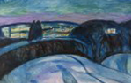
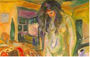
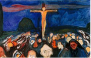
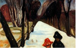

1920년도 작품  별이 빛나는 밤 Starry night 1922년 ~ 1924년 Oil on canvas  등의자 곁에 선 나부 Model by the Wicker Chair 1912년 ~ 1921년 Oil on canvas
1900년도 작품  골고다 언덕 Golgotha 1900년 Oil on canvas  도로에 내리는 눈 Snow Falling in the Lane 1906년 Oil on canvas